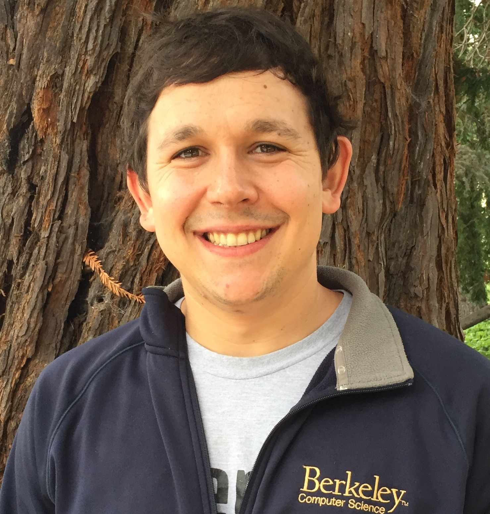
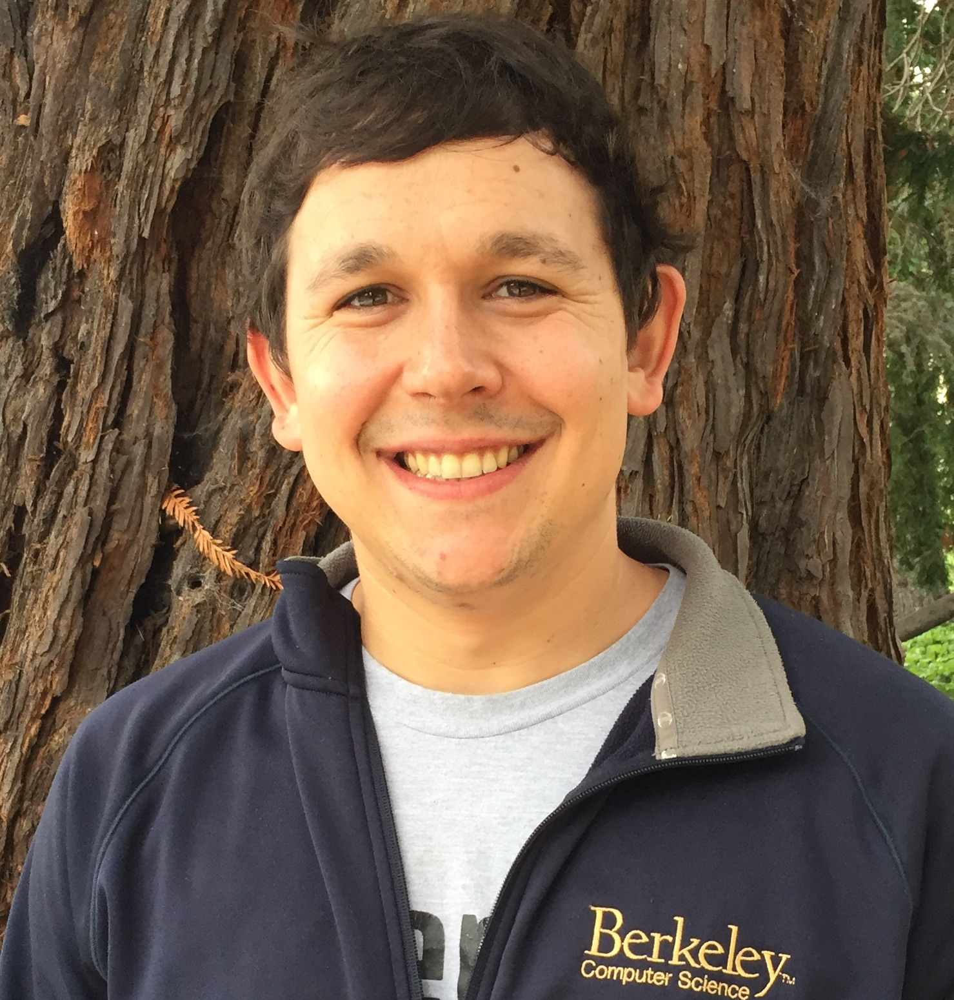

This program part involves moderated debates to identify challenges to apply RL in the real-world and how each of our communities can contribute to solving them. Therefore, we invite ists as experts in their fields as well as the audience. The debates are a core part of the workshop's idea to foster discussion across the different domains.
IROS'21 Workshop RL-CONFORM
Reinforcement Learning meets HRI, Control, and Formal Methods
Reinforcement learning (RL) has shown remarkable achievements in applications ranging from autonomous driving, object manipulation, or beating best players in complex board-games.
However, elementary problems of RL remain open: exploratory and learned policies may cause unsafe situations, lack task-robustness, or be unstable.
By satisfactorily addressing these problems, RL research will have long-lasting impact and see breakthroughs on real physical systems and in human-centered environments.
Different communities have proposed multiple techniques to increase safety, transparency, and robustness of RL.
The aim of this workshop is to provide a multidisciplinary platform to (1) jointly identify and clearly define the major challenges in RL, (2) propose and debate existing approaches to ensure desired properties of learned policies from various perspectives, and (3) discuss benchmarks to accelerate RL research.
The themes of the workshop would comprise (but not be limited to) RL and control theory, RL and Human-Robot Interaction, RL and Formal Methods, benchmarking of RL, etc.
The recordings of our workshop in 2021 are linked below in the Program. We thank all speakers and attendees!
Program (all times are CEST)
September 27, 2021.
| 14:00-14:10 | Welcome (video) |
| 14:10-14:30 | Invited talk: Mohammed Chetouani (video) |
| 14:30-14:50 | Invited talk: Ufuk Topcu (video) |
| 14:50-15:20 | Short paper presentations I (videos) |
| 15:20-15:30 | Break |
| 15:30-15:50 | Invited talk: Emma Brunskill (video) |
| 15:50-16:10 | Invited talk: Dorsa Sadigh (video) |
| 16:10-16:30 | Invited talk: Kimin Lee (video) |
| 16:30-16:40 | Break |
| 16:40-17:00 | Invited talk: Josh Achiam (video) |
| 17:00-17:20 | Invited talk: Fabio Ramos (video) |
| 17:20-17:40 | Break |
| 17:40-20:00 | Interactive Session (videos) |
| 20:00-20:20 | Break |
| 20:20-21:00 | Short paper presentations II (videos) |
| 21:00- | Workshop outro and Get together |
Short paper presentations
| 14:50-15:00 |
Jakob Thumm and Matthias Althoff. "Formally Safe Deep Reinforcement Learning for Robotic Manipulation in Human Environments" (video) |
| 15:00-15:10 |
Dennis Groß, Nils Jansen, Sebastian Junges and Guillermo Perez. "COOL-MC: A Comprehensive Tool for Learning and Model Checking" (video) |
| 15:10-15:20 |
Filip Cano Cordoba. "Improve RL by clever initialization with DPLL: a case study playing Super Mario Bros" (video) |
| 20:20-20:30 |
Bhoram Lee, Jonathan Brookshire and Supun Samarasekera. "Mixed-Reality Testbed for Robotic Systems with Human Interaction" (video) |
| 20:30-20:40 |
Michael McDonald and Dylan Hadfield-Menell. "Guided Imitation of Task and Motion Planning" (video) |
| 20:40-20:50 |
Jerry Zhi-Yang He, Anca D. Dragan and Dylan Hadfield-Menell. "Fast Inverse Reward Design with Universal Feature Networks" (video) |
| 20:50-21:00 |
Tommaso Mannucci and Julio de Oliveira Filho. "Runtime verification for reinforcement learning modules" (video) |
Interactive Session
| 17:40-18:40 |
Panel I: “Common challenges in RL across the Control, FM and HRI communities” (video) Panelists: Joschka Boedecker, Anca Dragan, Fabio Ramos and Jana Tumova. |
| 18:40-19:00 | Break |
| 19:00-20:00 |
Panel II: “What can our communities provide to tackle these challenges?” (video) Panelists: Roderick Bloem, Aleksandra Faust, Sebastian Junges and Dorsa Sadigh. |
Invited Speakers
Josh Achiam, OpenAI, USA.
Title: Safe Exploration with Constrained Reinforcement Learning
Abstract: this talk, we will advocate for constrained reinforcement learning as a key formalism for safety in the context of safe exploration problems and safe RL more broadly. We will discuss challenges in benchmarking progress in safe exploration, and present Safety Gym, a suite of environments and tools intended to meet that need. We will additionally present Lagrangian PID methods, a recent algorithmic development that improves the state of the art for constraint satisfaction and robustness as measured with Safety Gym environments. Finally, we will conclude with a discussion of the gaps between safety research and safety practice, and describe how we might use lessons from the engineering discipline of systems safety to inform our future research.
Bio: Joshua Achiam is a research scientist at OpenAI working on safety for general-purpose AI. He received his PhD from UC Berkeley in 2021, where he was coadvised by Pieter Abbeel and Shankar Sastry. His research covers a range of topics in safety and exploration in deep reinforcement learning, and his interests include alignment, optimization, ethics, and systems safety.
Emma Brunskill, Stanford University, USA.
Title: Learning More from the Past: Offline Batch RL
Abstract: There is a huge opportunity for enhancing evidence-driven decision making by leveraging the increasing amount of data collected about decisions made, and their outcomes. Reinforcement learning is a natural framework to capture this setting, but online reinforcement learning may always be feasible for higher stakes domains like healthcare or education. In this talk I will discuss our work on offline, batch reinforcement learning, and the progress we have made in techniques that can work efficiently with limited data, and under limited assumptions about the domain.
Bio: Emma Brunskill is an associate professor in the Computer Science Department at Stanford University. Her lab is part of the Stanford AI Lab, the Stanford Statistical ML group, and AI Safety @Stanford. Brunskill and her group's work has been honored by early faculty career awards (National Science Foundation, Office of Naval Research, Microsoft Research (1 of 7 worldwide) ) and several best research paper nominations (CHI, EDMx3) and awards (UAI, RLDM, ITS).
Mohamed Chetouani, Sorbonne University, France.
Abstract: Socially Interactive Learning: On the interpretation of human teaching signals
There are increasing situations in which humans and AI systems are acting, deciding and/or learning. In this short talk, we discuss approaches and models able to capture specific strategies of humans while they are teaching agents. We will see how social learning based approaches make it possible to take into account such strategies in the development of interactive machine learning techniques and in particular when it comes to social robotics.
Bio: Prof. Mohamed Chetouani is the head of the PIRoS (Perception, Interaction et Robotique Sociales) research team at the Institute for Intelligent Systems and Robotics (CNRS UMR 7222), Sorbonne University. He is currently a Full Professor in signal processing and machine learning for human-machine interaction. His activities cover social signal processing, social robotics and interactive machine learning with applications in psychiatry, psychology, social neuroscience and education. He is the Deputy Director of the Laboratory of Excellence SMART Human/Machine/Human Interactions In The Digital Society. Since 2018, he is the coordinator of the ANIMATAS H2020 Marie Sklodowska Curie European Training Network. He is the local co-chair of IEEE ICRA 2020 (Paris), Program co-chair of ICMI 2020 (Utrecht), General Chair of VIHAR 2021 and of ACM ICMI 2023. Since 2020, he is the President of the Ethical Advisory Board of Sorbonne University.
Kimin Lee, UC Berkeley, USA.
Title: Scaling Up Deep Reinforcement Learning via Preference-based Learning: Feedback-efficient Algorithm and Benchmark
Abstract: Deep Reinforcement Learning (RL) has been successful in a range of challenging domains, such as board games, video games, and robotic control tasks. Scaling RL to many applications, however, is yet precluded by a number of challenges. One such challenge lies in designing a suitable reward function that is sufficiently informative yet easy enough to provide. Human-in-the-loop RL methods allow practitioners to instead interactively teach agents through tailored feedback; however, such approaches have been challenging to scale since human feedback is very expensive. In this talk, I’ll present PEBBLE: a feedback-efficient RL algorithm by which learning is largely autonomous and supplemented by a practical number of preferences provided by a supervisor. Based on off-policy RL and unsupervised pre-training, our method is able to utilize real-time human feedback to effectively prevent reward exploitation and learn new behaviors that are difficult to specify with standard reward functions. Additionally, I’ll introduce B-Pref: a benchmark specially designed for preference-based RL to further our understanding of the strengths of existing algorithms. .
Bio: Kimin Lee is a postdoc at UC Berkeley working with Prof. Pieter Abbeel. He is interested in the directions that enable scaling deep reinforcement learning to diverse and challenging domains — human-in-the-loop reinforcement learning, unsupervised reinforcement learning, and reinforcement learning from pixels. He received his Ph.D. from KAIST, where he worked on a reliable and robust machine/deep learning with Prof. Jinwoo Shin. During Ph.D., he also interned and collaborated closely with Prof. Honglak Lee at University of Michigan.
Fabio Ramos, University of Sydney, Australia, and NVIDIA, USA.
Title: Modelling Uncertainty in Simulation Parameters for Robust Reinforcement Learning
Abstract: Model-free methods and physics models have been mostly utilised as separate tools to train robust policies that perform well in the real world. We aim to close this gap and develop machine learning methods that, as much as possible, integrate prior knowledge into the pipeline. Recent advancements in Bayesian inference enables a probabilistic treatment for the problem of estimating model parameters and their uncertainty given sequences of observations. In this talk, I will describe the integration of parameter inference for scientific simulators with both model-free reinforcement learning and model-based control in a novel sequential algorithm that alternates between learning a better estimation of parameters and improving automated decision making. This approach exploits the interdependence between the two problems to generate computational efficiencies and improved reliability when a physics simulator is available. Experimental results suggest that these strategies have better performance compared to pure machine learning methods.
Bio: Fabio Ramos is a Professor in robotics and machine learning at the School of Computer Science, University of Sydney, where he leads the Learning and Reasoning Group. He is also a Principal Research Scientist at NVIDIA, working on the connections between statistical machine learning and robotics. He received the BSc and MSc degrees in Mechatronics Engineering at University of Sao Paulo, Brazil, and the PhD degree at the University of Sydney, Australia. His research focuses on statistical machine learning techniques for large-scale Bayesian inference and decision making with applications in robotics, mining, environmental monitoring and healthcare. From 2008 to 2011 he led the research team that designed the first autonomous open-pit iron mine in the world. He has over 150 peer-review publications and received Best Paper Awards at IROS, ACRA, ECML, and RSS.
Dorsa Sadigh, Stanford University, USA.
Title: Bringing in the Human in the (Reinforcement) Learning Loop
Abstract: Today, I will talk about the challenges of bringing in humans in the learning loop. Specifically, I will discuss how we can be more data-efficient in robotics when learning from humans by actively querying them. However, this is often not practical in RL settings due to the complexity of active learning of large neural models. Instead, I will go over two approaches that address the need for human data in RL settings: First, I will discuss a modular approach that incorporates inductive biases and enables faster adaptation to human partners. Second, I will briefly discuss how active data acquisition can be helpful for RL agents. Finally, I will conclude by showing that bringing in humans in the learning loop can enable us to aim for more interesting objectives beyond reacting. As an example, we can develop RL agents that can act in non-stationary environments or influence human partners toward more desirable outcomes.
Bio: Dorsa Sadigh is an assistant professor in Computer Science and Electrical Engineering at Stanford University. Her research interests lie in the intersection of robotics, learning, and control theory. Specifically, she is interested in developing algorithms for safe and adaptive human-robot and multi-agent interaction. Dorsa received her doctoral degree in Electrical Engineering and Computer Sciences (EECS) from UC Berkeley in 2017, and received her bachelor’s degree in EECS from UC Berkeley in 2012. She is recognized by awards such as the NSF CAREER award, the AFOSR Young Investigator award, the IEEE TCCPS early career award, MIT TR35, as well as industry awards such as the JP Morgan, Google, and Amazon faculty research awards.
Ufuk Topcu, University of Texas at Austin, USA.
Title: Verifiable reinforcement learning systems
Abstract: Reinforcement learning algorithms offer tremendous capabilities in systems that work in unknown environments. However, there remain significant barriers to their deployment in safety-critical engineering applications. For example, the verification of reinforcement learning systems is complex, and this is particularly true of monolithic end-to-end learning approaches that have been gaining popularity. In this presentation, I focus on the following question: How can we build trustworthy engineering systems that rely on reinforcement learning? I will present a series of recent results that seek answers for this question at the intersection of formal methods and reinforcement learning. I will detail two of these results on (i) verifiable and compositional reinforcement learning and (ii) cooperative multi-agent reinforcement learning.
Bio: Ufuk Topcu is an Associate Professor in the Department of Aerospace Engineering and Engineering Mechanics at The University of Texas at Austin. He is a core faculty member at the Oden Institute for Computational Engineering and Sciences. Ufuk obtained his Doctor of Philosophy degree from the University of California, Berkeley in 2008. Prior to joining The University of Texas at Austin, he was with the Department of Electrical and Systems Engineering at the University of Pennsylvania. He was a postdoctoral scholar at California Institute of Technology until 2012. Ufuk’s research focuses on the theoretical and algorithmic aspects of the design and verification of autonomous systems, typically in the intersection of formal methods, reinforcement learning, and control theory. He takes a relatively broad view on autonomy and tends to tackle abstract problems motivated by challenges cutting across multiple applications of autonomy. His research contributions have been recognized by the NSF CAREER Award, the Air Force Young Investigator Award, the IEEE CSS Antonio Ruberti Young Researcher Prize, and Oden Institute Distinguished Researcher Award.
Panelists
- Roderick Bloem, TU Graz, Austria.
- Joschka Boedecker, University of Freiburg, Germany.
- Anca Dragan, UC Berkeley, USA.
- Aleksandra Faust, Google Brain, USA.
- Sebastian Junges, Radboud University Nijmegen, Netherlands.
- Fabio Ramos, University of Sydney, Australia, and NVIDIA, USA.
- Dorsa Sadigh, Stanford University, USA.
- Jana Tumova, KTH Royal Institute of Technology, Sweden.
Call for Papers
We invite extended abstract submissions of recent works, preliminary work with open questions is very welcome, related to the theme of the workshop. All accepted abstracts will be part of a short paper presentation session held during the workshop, where the authors will have the opportunity to present their lines of work in a 2-minutes-long video that will be played during the workshop, and followed by a 3-minutes live Q&A session. This is a non-archival venue: there will be no formal proceedings, but we encourage the authors to publish their extended abstracts on Arxiv (where the link will be placed on the workshop’s website). Abstracts may be submitted to other venues in the future.
Topics of interest include (but are not limited to) applications of Reinforcement Learning to:
- Formal Methods
- Control
- Human-Robot Interaction
Important details
- The RL-CONFORM workshop will be held via Zoom and gCon.
- When: September 27, 2021. 14:00-21:00 CEST.
- Where: Zoom and gCon
- Website: https://saferl-workshop.github.io/RL-CONFORM_IROS2021/
- Submission deadline:
August 13, 2021September 1, 2021 (AoE) - Notification of acceptance:
August 31, 2021September 7, 2021 (AoE) - Submission website: https://easychair.org/conferences/?conf=rlconform2021
- Submission format: 2-page papers/extended abstracts (plus references) of original, possibly ongoing research. Papers should be formatted in the IROS 2021 style guidelines https://www.iros2021.org/call-for-papers
Organizing Committee and Support
Program Chairs
- Christian Pek, KTH Royal Institute of Technology, Sweden.
- Dylan Hadfield-Menell, MIT, USA.
- Bettina Könighofer, TU Graz, Austria.
- Alexis Linard, KTH Royal Institute of Technology, Sweden.
- Hang Yin, KTH Royal Institute of Technology, Sweden.
 

Advisory Committee
- Anca Dragan, UC Berkeley, USA.
- Nils Jansen, Radboud University Nijmegen, Netherlands.
- Danica Kragic Jensfelt, KTH Royal Institute of Technology, Sweden.
- Iolanda Leite, KTH Royal Institute of Technology, Sweden.
- Jana Tumova, KTH Royal Institute of Technology, Sweden.